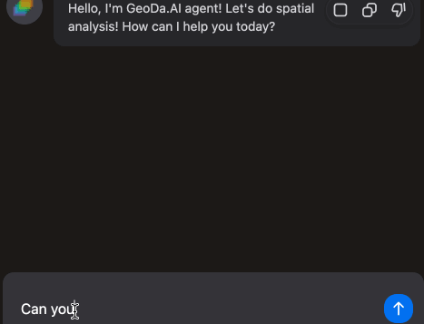

Ask Anything About Spatial Data Analysis
GeoDa.AI is a customized large language model that can assist users with spatial analysis tasks by responding to their text, voice and screenshot prompts. The model is fine-tuned on a corpus of spatial data and spatial analysis tasks, and it can understand and respond to a variety of natural language queries.You can ask anything about your data and apply spatial data analysis using GeoDa.AI. GeoDa AI can run spatial statistics, generate maps and charts, create spatial weights and even apply spatial regressions to help you understand your spatial data.
Get Insights With Powerful Tools
GeoDa provides powerful tools for spatial data analysis, including mapping, space-time exploration, spatial weights, spatial autocorrelation, spatial cluster analysis, and spatial regression. GeoDa.AI will leverage these tools in conjunction with the AI model to enable users to gain insights from their spatial data and solve spatial problems more quickly and easily.In comparison to traditional spatial analysis tools, the GeoDa.AI model is capable of learning and improving itself from the spatial analyses that all users perform. As the model is used by more and more users, it will continue to learn and improve, making it an increasingly powerful and valuable tool for spatial analysis.
Interactive Spatial Data Analysis
GeoDa.AI extends the classic brushing-and-linking functionality of desktop GeoDa to the browser. It enables users to perform interactive spatial data analysis across maps, tables, plots, and chats. GeoDa.AI also supports SQL queries on browser-based data. This provides a novel and convenient way to explore spatial data.GeoDa.AI is designed and developed based on libgeoda, Arrow, DuckDB, WebAssembly, and Kepler.GL. This enables us to run the entire GeoDa library in the browser quickly and efficiently.
Share Your Analysis Dashboard With Style
A good dashboard helps you to visualize data, communicate results, and collaborate with others. GeoDa.AI makes creating and sharing a dashboard so easy: you can drag-n-drop any text, plot and map from your chat with GeoDa.AI into the dashboard. They can also use the text editor to add titles, labels, and annotations. When users are finished creating their dashboard, they can share it with others by simply sharing the dashboard file.